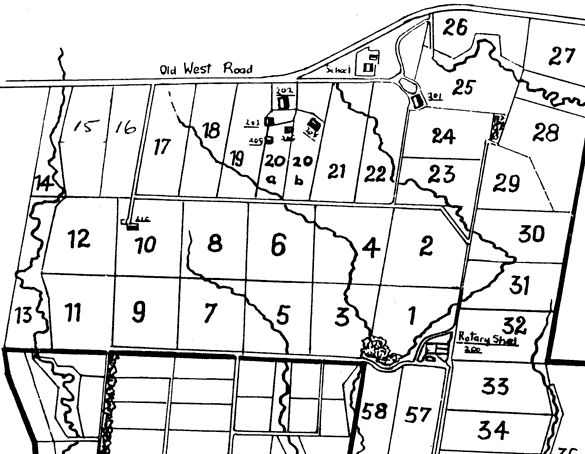

Unavoidable variation in experimental units
In the previous page, we explained that identical experimental units give the most accurate estimates of the effect of a factor. However in practice, we usually have little choice in the experimental units that are used and these are often variable.
Sometimes we have no prior understanding of the variability of the experimental units. For example, we may know that a batch of maize seeds are variable but cannot tell anything about the differences from looking at them. In this case, a completely randomised experiment is the best possible design.
Blocks based on measurements from experimental units
In other experiments, we can measure characteristics of each experimental unit that are associated with some of their differences. For example, we could perhaps weigh each of the calves in the example on the previous page before deciding which calf gets which feed supplement.
These measured characteristics of the experimental units could be used to form groups of similar experimental units called blocks.
Other blocks of similar units
Sometimes we may not have measurements from the experimental units but can use either position or time to form them into blocks that we expect to be similar.
Later sections of this chapter will show that designing an experiment taking account of blocks often gives much more accurate estimates of the factor effects of interest.
Pasture management
Most farms managing animals convert grass into products predominantly meat and dairy. Over the winter animals are rotated around the paddocks so as to graze the grass but still leave sufficient to ensure good growth in the spring. Traditionally the grass was grazed right down in spring when good growing conditions would allow fast regrowth but theory suggested that delaying severe grazing until early summer might give higher dry matter yield.
An experiment was conducted on a dairy farm owned by Massey University in New Zealand to assess three different pasture management strategies (early, late and very late severe grazing). The farm paddocks are numbered in the diagram below.

For operational reasons, it was decided to use paddocks numbered 6, 9, 11, 16 and 17 in the experiment and each paddock was divided into three parts (the experimental units) — the minimum size to apply a different management strategy.
It is fairly obvious that the paddocks are not identical. Paddock 6 has a creek running through one corner, 11 has a creek close to one boundary and 17 has the start of a creek in it. Paddocks 9 and 16 look less affected by water changes. We have no idea what the paddocks have been used for in the recent past nor do we know what the fertiliser history of each is. However the three experimental units in each paddock are likely to be relatively similar to each other, so we can consider each paddock to be a block of three experimental units.
Roots and competition
When crops and trees are grown together under semi-arid conditions, competition for soil moisture can reduce crop yields. An experiment was conducted to assess how crop yields were affected by different adjacent tree types and different pruning of these trees. Eleven treatments were used in the experiment (ten combinations of tree type and pruning and a control treatment with no trees).
The experiment was conducted in an area represented by the diagram below. Each plot was planted with a row of trees in the middle and a trench was seasonally dug and refilled around each plot to prevent root interference with adjacent plots.
Although previous crop yields had been similar in all plots (with the exception of an ant hill that was not used in the experiment), it was realised that there were some differences, so plots were grouped into blocks according to a visual assessment of the land and soil. All blocks contain 11 plots to allow each treatment to be used once within each block.